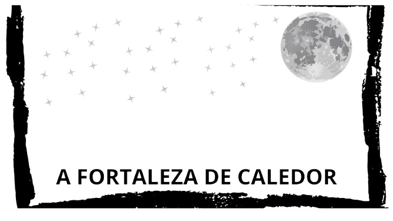

Em um tempo sombrio da Idade Média, onde feudos disputavam poder e magia era um conhecimento secreto, erguia-se a imponente fortaleza de Caledor, envolta por uma floresta densa e ancestral. O vento assobiava entre as pedras antigas, carregando lendas sobre a fortaleza e o seu precioso segredo: um amuleto de cristal que, segundo histórias antigas, possuía o poder de controlar as forças da natureza e trazer prosperidade para quem o possuísse.
A Fortaleza de Caledor era protegida pelo lorde Edwyn, um guerreiro de barba grisalha e cicatrizes que contavam suas batalhas contra invasores e criaturas que rondavam os arredores da fortaleza. Ele acreditava que o poder do amuleto só deveria ser usado em situações de grande necessidade. Ao lado dele estavam quatro personagens igualmente corajosos e ambiciosos:
Helena, a arqueira de olhos verdes, sagaz e ágil, que cresceu nos campos e florestas vizinhas. Seu coração era tão afiado quanto suas flechas, e ela não confiava em ninguém com facilidade.
Baldric, o aprendiz de alquimista, jovem e curioso, que possuía o conhecimento das ervas e misturas alquímicas. Ele vestia um manto surrado com bolsos cheios de ingredientes e frascos, e seu olhar mostrava um misto de medo e fascínio pelo amuleto.
Sir Gareth, um cavaleiro veterano, imenso em tamanho e força, conhecido por seu senso de honra e lealdade a Edwyn. Ele carregava uma espada larga e usava uma armadura que reluzia mesmo sob a luz fraca do sol, sendo o mais experiente e respeitado do grupo.
Lana, uma camponesa que possuía dons de cura e sabia ler os sinais do tempo e da natureza. Tímida e reservada, Lana era conhecida pela sua bondade e pelo desejo de proteger seu povo das pragas e da fome que afligiam a região.
A missão era clara: os boatos de que um grupo rival buscava o amuleto haviam chegado até Caledor, e Lorde Edwyn ordenou que seus aliados partissem em busca de um lugar seguro para escondê-lo. Antes de sair, eles se depararam com uma bifurcação no interior da fortaleza, onde duas grandes portas de madeira, cada uma com um botão antigo e enferrujado, estavam à sua frente.
O grupo segue para os corredores da masmorra, onde o ar é pesado e escuro.
O grupo sobe as escadarias até a torre, de onde se pode ver a floresta que cerca Caledor.
A porta que leva às profundezas da masmorra se abre, revelando um corredor estreito e úmido. As chamas das tochas dançam enquanto eles avançam, e o eco dos seus passos ressoa pelo lugar sombrio. Em pouco tempo, eles avistam duas novas portas à frente, cada uma com um botão ornamentado
Eles seguem pelo túnel mais à direita, que leva a uma sala cheia de armas e armadilhas antigas.
Eles decidem explorar o caminho da esquerda, onde ouvem sons misteriosos e avistam uma luz fraca ao longe.
Caso decidam subir pela escadaria (Botão 2), o grupo logo se depara com uma visão ampla da floresta e das montanhas ao longe, mas também percebe que o ar aqui é rarefeito e frio. Helena, a arqueira, sente um arrepio ao avistar algo suspeito no horizonte: uma fumaça negra que indica possíveis invasores. O grupo está nervoso, e dois caminhos aparecem:
Descer para o salão principal e armar defesas rapidamente.
Fugir pela passagem secreta atrás da torre para despistar possíveis inimigos.
Ao descer para o salão principal, eles se deparam com uma cena caótica; o grupo de invasores já conseguiu infiltrar-se na fortaleza. Eles têm duas opções rápidas:
Esconder-se na adega e aguardar uma oportunidade para lutar de forma estratégica.
Organizar uma emboscada nas escadarias para defender o salão principal.
Ao tentarem fugir pela passagem secreta, o grupo é encurralado por bandidos que já haviam encontrado essa saída. Sem chance de lutar, o amuleto é roubado, e o vilarejo de Caledor fica vulnerável.
Reiniciar? üïπ
Escondidos na adega, o grupo consegue ver o momento ideal para emboscar os invasores, pegando-os desprevenidos. A batalha é árdua, mas ao final, eles conseguem proteger o amuleto e restabelecer a paz no vilarejo.
Reiniciar? üïπ
Caso o grupo consiga defender a fortaleza, eles retornam para o ponto de partida e precisam decidir se devem explorar novamente as portas para verificar se há mais perigos.
Eles seguem pelo túnel mais à direita, que leva a uma sala cheia de armas e armadilhas antigas.
Eles decidem explorar o caminho da esquerda, onde ouvem sons misteriosos e avistam uma luz fraca ao longe.
Ao escolher o túnel mais à direita, o grupo entra em uma câmara de armamentos antigos, onde espadas, lanças e escudos estão empilhados ao redor de uma estranha inscrição no chão. Baldric, o aprendiz de alquimista, percebe que o desenho no chão é uma runa de proteção. Dois botões na parede indicam outras passagens:
Seguir para uma passagem secreta sob a runa, que pode levá-los a um túnel de fuga.
Tentar descobrir mais sobre o poder da runa e se concentrar em ativá-la.
Ao explorar o caminho à esquerda e se aproximar da luz, eles encontram um santuário escondido, onde está a relíquia original do amuleto. Era uma versão ainda mais poderosa, oculta desde tempos antigos para proteger o vilarejo. A missão deles estava completa; com o amuleto seguro e escondido, Lorde Edwyn garante a proteção da fortaleza e do vilarejo contra qualquer invasor.
Reiniciar? üïπ
Eles acabam liberando uma antiga maldição que aprisiona todos no local, deixando o amuleto exposto aos inimigos.
Reiniciar? üïπ
Eles encontram uma saída segura que os leva até uma caverna protegida, onde podem ocultar o amuleto para sempre. Vitória!
Reiniciar? üïπ